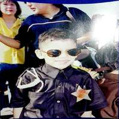
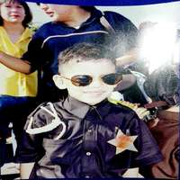

Tengo vagas memorias de donde estudié el kínder, pero creo que se llamaba patria y lo único que recuerdo desafortunadamente es de un niño que me quitaba el lonche, lonche que mi madre se esforzaba en darme, mi sándwich, mi juguito y una manzana siempre me la quitaba lo que más me dolía era mi sándwich que era con quesito derretido. Bueno fue que no duré mucho ahí y pude pasar de él sin crecer traumado. Ya que no recuerdo mucho de mi kínder comenzaré a hablar de mi primaria que fue primeramente en el colegio niños héroes donde pasé mis primeros 3 años, nada fuera de lo normal era un chico problemático supongo que lo aprendí de mi amigo del kínder, recuerdo siempre golpear a un solo niño y ese mismo niño me invitaba a su casa a comer, también era un poco gordito, mi madre se encargaba de alimentarme bien, pasaba mucho tiempo jugando en la calle con mis amigos. Hasta que tuvimos que mudarnos a estados unidos exactamente a Arizona y de ahí no pasé, ahí seguí con mis estudios en creo 3 o 4 primarias diferentes ya que mis papá se mudaban seguido de casa, en todas hice amigos pero no era lo mismo que en México no podía hacer mucho en mis tiempos libres más que ver la televisión pero hay que verle el lado bueno también tenían el Halloween, comía en la escuela y cosas bien deliciosas como hamburguesas y pizzas, aparte que me gustaba ir a los centros comerciales y las niñas eran lindas recuerdo que me gustaba una cuando estaba en Chandler pero era hermana de uno de mis mejores amigos, bueno aun que si no hubiera sido nada del igualmente creo que no hubiera hecho nada. No recuerdo haberme metido en problemas cuando estaba allá pero si tenía amigos chicanos muy problemáticos, podría decir que vivíamos en ambientes algo peligrosos. Cuando regresamos de estados unidos entre a una primaria cerca de mi casa llamada Cristóbal colón, fue aquí donde perdí mis agallas de pelear con todo mundo cuando un niño más grande que yo me hizo frente y me hizo darme cuenta que son más poderosas las palabras que los puños, era un niño muy arrogante y engreído por haber regresado de estados unidos hablando inglés, para mi edad me sentía la gran cosa por hablar dos idiomas a la perfección y me aseguraba que todos los supieran, creo que por eso me conseguí varios enemigos. Esos 2 años de mi primaria fueron los mejores, conocí a muchos de los que son todavía mis amigos y con quienes sigo teniendo contacto, fue una época muy divertida y a la vez llena de problemas.

Colegio Patria

Reno nevada

Colegio Niños heroes

Halloween en chendler
Teatro
Cuando estaba en el colegio niños héroes estaba en un taller de teatro me acuerdo mucho que tenían un colchón viejo donde practicábamos las "acrobacias", estuve en 3 interpretaciones, una era de bacterias contra anticuerpos (sí, yo era bacteria) y de las otras dos no recuerdo mucho pero me involucra a mi vestido de conejo y de oso (creo), incluso una vez me tocó desfilar vestido de sheriff.


 



Juegos favoritos de niño
- Escondidas
- tambo robado
- roña
- pataditas
- futbol
Caricaturas favoritas de niño
- Billy y mandy
- Power rangers
- Dragon ball
- Pokemon
- Avatar
Video juego favoritos
- Mario 64
- El señor de los anillos
- Mario kart
- Smash brothers
- Mario Party